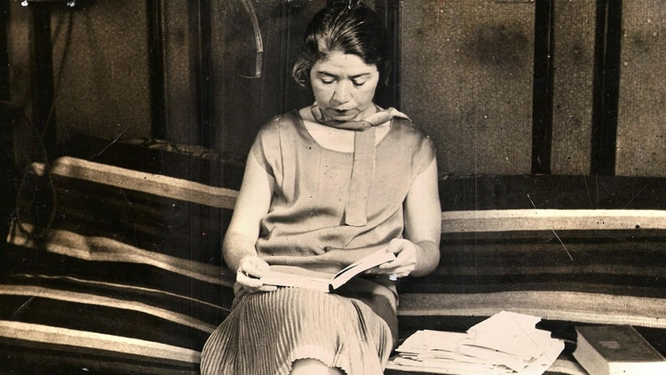

Trip and Art es una página que recopila textos de poetas y escritores sobre cultura y viajes.
¿Qué hace Trip and Art?
.jpg)

Maritza Cino (Ecuador)
mudanzas
los libros fueron transformándose en polillas
en cada mudanza fui perdiendo un poco de ellos
sin pena ni nostalgia me convertí en mala madre
los abandoné en cada casa
los aboné en cada casa
en cajones en cartones en repisas
en el baño en la cocina
en los rincones de mi cuarto
debajo de la cama
aglomerados en desorden:
un libro consumado debe macerarse en el vacío de
una casa
me convertí en mala madre
me alejé de sus cortezas y texturas
de subrayados y de notas
de los registros que se borran con el moho
los dejé entre larvas y silencio
entre mariposas moribundas
Alfonsina Storni (Argentina)
Voy a dormir
Dientes de flores, cofia de rocío,
manos de hierbas, tú, nodriza fina,
tenme prestas las sábanas terrosas
y el edredón de musgos escardados.
Voy a dormir, nodriza mía, acuéstame.
Ponme una lámpara a la cabecera;
una constelación, la que te guste;
todas son buenas, bájala un poquito.
Déjame sola: oyes romper los brotes…
te acuna un pie celeste desde arriba
y un pájaro te traza unos compases
para que olvides… Gracias… Ah, un encargo:
si él llama nuevamente por teléfono
le dices que no insista, que he salido.
Gabriela Mistral (Chile)
Piececitos
Piececitos de niño,
azulosos de frío,
¡cómo os ven y no os cubren,
Dios mío!
¡Piececitos heridos
por los guijarros todos,
ultrajados de nieves
y lodos!
El hombre ciego ignora
que por donde pasáis,
una flor de luz viva
dejáis;
que allí donde ponéis
la plantita sangrante,
el nardo nace más
fragante.
Sed, puesto que marcháis
por los caminos rectos,
heroicos como sois
perfectos.
Piececitos de niño,
dos joyitas sufrientes,
¡cómo pasan sin veros
las gentes!